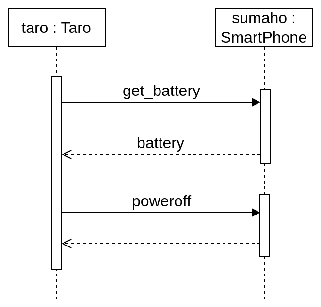
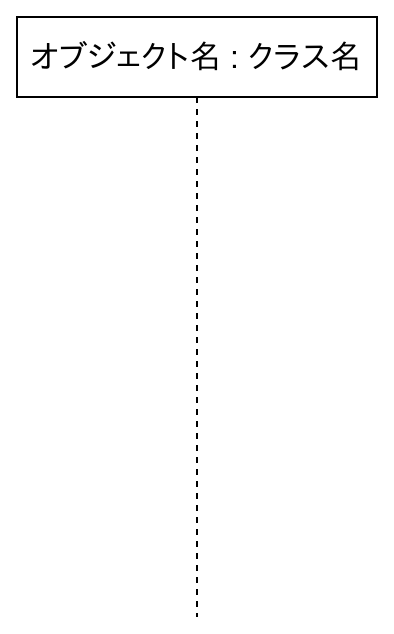
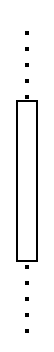
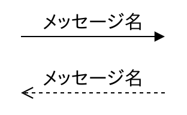

ここではシーケンス図について説明します。
シーケンス図はオブジェクト(インスタンス)間のメッセージパッシング(メソッド呼び出し)を時系列で表現する図です。
シーケンス図を描くと処理の流れが視覚的に分かりやすくなるので、バグの混入を防いだり、デバッグが楽になったりするというメリットがあります。
では簡単な例を示しながらシーケンス図の描き方について説明します。
まず以下の「Taro」クラスと「SmartPhone」クラスが次のように定義されているとします。
public class Taro{
private SmartPhone sumaho;
public Taro(){
SmartPhone sumaho = new SmartPhone();
System.out.println( "残量 = " + sumaho.get_battery() + "％" );
sumaho.poweroff();
}
}
public class SmartPhone{
private int battery = 0;
public int get_battery(){
return battery;
}
public void poweroff(){
System.out.println( "電源OFF" );
}
}
このとき「Main」クラスで Taro クラスのインスタンス「taro」を作成します。
public class Main{
public static void main(String[] args) {
Taro taro = new Taro();
}
}
すると taro はコンストラクタの中で SmartPhone クラスのインスタンス「sumaho」を作成して get_battery メソッドと poweroff メソッドを呼び出します。
実行結果は以下になります。
残量 = 0％ 電源OFF
以上の処理の流れをシーケンス図で表したのが次の図1となります。
図1 シーケンス図の例
一番上にある四角とその下に付いている破線を「ライフライン」と呼び、あるクラスのオブジェクト(インスタンス)が存在する期間を表します(図2)。
図2 ライフライン
ライフラインの破線上にある小さい四角を「実行仕様」と呼び、オブジェクト(インスタンス)が実行されている期間を表します(図3)。
図3 実行仕様

あるオブジェクト(インスタンス)の実行仕様から他のオブジェクト(インスタンス)の実行仕様をつないでいる矢印を「メッセージ」と呼び、実線の矢印を「同期」(メソッド呼び出し)、破線の矢印を「応答」と呼びます(図4)。
またメッセージの上に書いてあるコメントを「メッセージ名」と呼びます。
図4 同期と応答

今回の例では get_battery メソッドを呼び出した時のメッセージ名にはメソッドの名前(get_battery)、その応答のメッセージ名にはフィールド名(battery)を書いていますが、メッセージ名の書き方に決まりは無いので言葉を使って書くこともあります。
また poweroff メソッドは void 型なので応答メッセージはありませんが、この場合は破線矢印の記述を省略する場合もあります。
以上が基本的なシーケンス図の描き方の説明になりますが、条件分岐(alt)・ループ処理(Loop)などの制御処理もシーケンス図で表すことが出来ます。
制御処理については今回は触れませんので、興味があれば自分で調べてください。